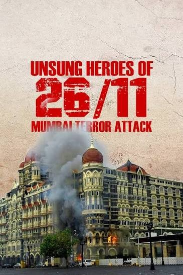

Welcome to the Memorial
“This website honours those we lost. Behind every uniform was a person who ran towards the gunfire, so that others could run away from it.”
0
lives lost
0
police, Home Guards & NSG commandos fell
0
people injured
0
hours of terror
Timeline
Where Mumbai Was Attacked
Select a location to see who fell there in the Roll of Honour.
Lives lost per site are the most commonly cited figures. Official and press counts differ slightly.
Roll of Honour

They ran towards the gunfire.
Fourteen police officers, a Home Guard and two NSG commandos gave their lives so that others could live. Some carried old rifles against automatic weapons. Some had only a lathi.
Search by name, or pick a location on the map to see who fell there.

Ashok Chakra · Taj Mahal Palace Hotel
Major Sandeep Unnikrishnan
“Do not come up, I will handle them.”
He led his NSG commandos into the burning Taj on the night of 27 November. He is credited with helping rescue 14 hostages before he was shot. He was 31.
Heroes Without Uniform
Staff, nurses and ordinary people who chose to protect others.
Video Tribute
Light a Candle
Tap the candle to light it in their memory.